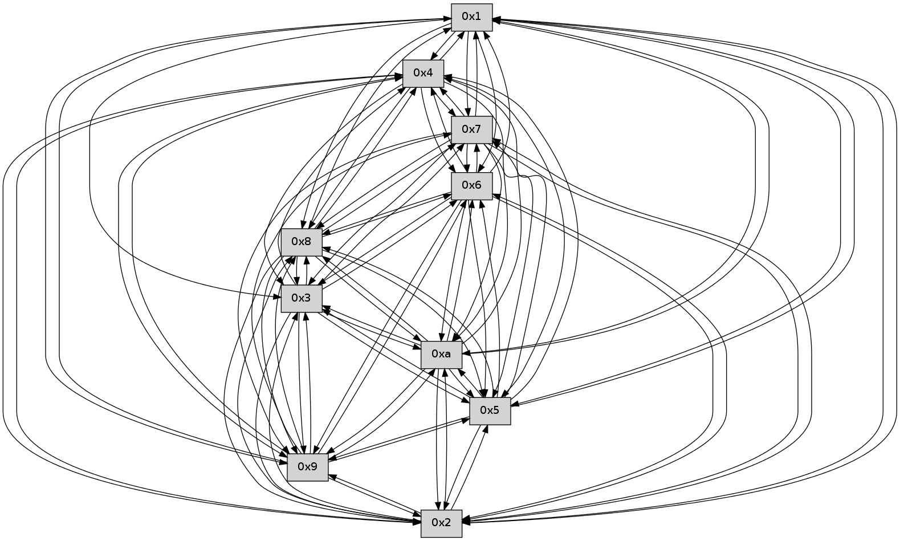

>> << IDX [start] -100 -25 -5 +0 +5 +25 +100 [260.511541128]
 Previous packets
255.004599 beacon02(faad) #0 coord=01,02,03,04,05,06,07,0a,09,08 cycle=688.0ms assoc 64 e2 92
255.014599 beacon03(faad) #0 coord=01,02,03,04,05,06,07,0a,09,08 cycle=688.0ms assoc 64 98 df
255.024600 beacon04(faad) #0 coord=01,02,03,04,05,06,07,0a,09,08 cycle=688.0ms assoc 64 ef 35
255.034603 beacon05(faad) #0 coord=01,02,03,04,05,06,07,0a,09,08 cycle=688.0ms assoc 64 95 78
255.044601 beacon06(faad) #0 coord=01,02,03,04,05,06,07,0a,09,08 cycle=688.0ms assoc 64 1b af
255.054602 beacon07(faad) #0 coord=01,02,03,04,05,06,07,0a,09,08 cycle=688.0ms assoc 64 61 e2
255.064606 beacon0a(faad) #0 coord=01,02,03,04,05,06,07,0a,09,08 cycle=688.0ms assoc 64 10 e9
255.074606 beacon09(faad) #0 coord=01,02,03,04,05,06,07,0a,09,08 cycle=688.0ms assoc 64 9e 3e
255.084606 beacon08(faad) #0 coord=01,02,03,04,05,06,07,0a,09,08 cycle=688.0ms assoc 64 e4 73
255.095781 [Hello(9): seq=110 sym=5,2,3,4,7,6,8,10,1 sysInfo= stat=5:15,0,0,0/2:15,0,0,0/3:3,0,0,0/4:11,0,0,0/7:8,0,0,0/6:0,0,0,0/8:2,0,0,0/10:0,0,0,0/1:8,0,0,0]
255.098771 [Hello(6): seq=167 sym=2,3,5,4,7,9,8,10,1 sysInfo= stat=2:12,0,0,0/3:9,0,0,0/5:2,0,0,0/4:15,0,0,0/7:5,0,0,0/9:12,0,0,0/8:12,0,0,0/10:9,0,0,0/1:8,0,0,0]
255.103716 [Hello(8): seq=110 sym=5,2,3,4,7,6,9,10,1 sysInfo= stat=5:9,0,0,0/2:8,0,0,0/3:10,0,0,0/4:14,0,0,0/7:8,0,0,0/6:11,0,0,0/9:2,0,0,0/10:13,0,0,0/1:13,0,0,0]
255.106241 [Hello(7): seq=167 sym=2,3,5,6,4,8,9,10,1 sysInfo= stat=2:7,0,0,0/3:8,0,0,0/5:5,0,0,0/6:12,0,0,0/4:10,0,0,0/8:7,0,0,0/9:8,0,0,0/10:4,0,0,0/1:11,0,0,0]
255.109118 [Hello(10): seq=99 sym=6,3,2,5,9,8,4,1 sysInfo= stat=6:3,0,0,0/3:9,0,0,0/2:8,0,0,0/5:12,0,0,0/9:5,0,0,0/8:5,0,0,0/4:6,0,0,0/1:0,0,0,0]
----------------------------------------------------------------------
255.782752 beacon01(faad) #0 coord=01,02,03,04,05,06,07,0a,09,08 cycle=688.0ms assoc
-- color-indic=0 64 b5 ad
255.792733 beacon02(faad) #0 coord=01,02,03,04,05,06,07,0a,09,08 cycle=688.0ms assoc 64 26 9c
255.802734 beacon03(faad) #0 coord=01,02,03,04,05,06,07,0a,09,08 cycle=688.0ms assoc 64 5c d1
255.812733 beacon04(faad) #0 coord=01,02,03,04,05,06,07,0a,09,08 cycle=688.0ms assoc 64 2b 3b
255.822734 beacon05(faad) #0 coord=01,02,03,04,05,06,07,0a,09,08 cycle=688.0ms assoc 64 51 76
255.832734 beacon06(faad) #0 coord=01,02,03,04,05,06,07,0a,09,08 cycle=688.0ms assoc 64 df a1
255.842735 beacon07(faad) #0 coord=01,02,03,04,05,06,07,0a,09,08 cycle=688.0ms assoc 64 a5 ec
255.852740 beacon0a(faad) #0 coord=01,02,03,04,05,06,07,0a,09,08 cycle=688.0ms assoc 64 d4 e7
255.862740 beacon09(faad) #0 coord=01,02,03,04,05,06,07,0a,09,08 cycle=688.0ms assoc 64 5a 30
255.872741 beacon08(faad) #0 coord=01,02,03,04,05,06,07,0a,09,08 cycle=688.0ms assoc 64 20 7d
255.883917 [Hello(1): seq=76 sym=4,2,9,5,10,3,8,6,7 sysInfo= stat=4:9,0,0,0/2:9,0,0,0/9:15,0,0,0/5:15,0,0,0/10:10,0,0,0/3:7,0,0,0/8:10,0,0,0/6:2,0,0,0/7:2,0,0,0]
255.890123 [Hello(4): seq=168 sym=5,7,6,2,3,9,8,10,1 sysInfo= stat=5:10,0,0,0/7:10,0,0,0/6:0,0,0,0/2:10,0,0,0/3:2,0,0,0/9:1,0,0,0/8:1,0,0,0/10:2,0,0,0/1:1,0,0,0]
255.894545 [Hello(2): seq=165 sym=4,5,7,6,3,9,8,10,1 sysInfo= stat=4:7,0,0,0/5:12,0,0,0/7:13,0,0,0/6:0,0,0,0/3:6,0,0,0/9:3,0,0,0/8:0,0,0,0/10:12,0,0,0/1:3,0,0,0]
----------------------------------------------------------------------
256.570883 beacon01(faad) #0 coord=01,02,03,04,05,06,07,0a,09,08 cycle=688.0ms assoc
-- color-indic=0 64 09 a8
256.580865 beacon02(faad) #0 coord=01,02,03,04,05,06,07,0a,09,08 cycle=688.0ms assoc 64 9a 99
256.590865 beacon03(faad) #0 coord=01,02,03,04,05,06,07,0a,09,08 cycle=688.0ms assoc 64 e0 d4
256.600865 beacon04(faad) #0 coord=01,02,03,04,05,06,07,0a,09,08 cycle=688.0ms assoc 64 97 3e
256.610867 beacon05(faad) #0 coord=01,02,03,04,05,06,07,0a,09,08 cycle=688.0ms assoc 64 ed 73
256.620866 beacon06(faad) #0 coord=01,02,03,04,05,06,07,0a,09,08 cycle=688.0ms assoc 64 63 a4
256.630869 beacon07(faad) #0 coord=01,02,03,04,05,06,07,0a,09,08 cycle=688.0ms assoc 64 19 e9
256.640872 beacon0a(faad) #0 coord=01,02,03,04,05,06,07,0a,09,08 cycle=688.0ms assoc 64 68 e2
256.650871 beacon09(faad) #0 coord=01,02,03,04,05,06,07,0a,09,08 cycle=688.0ms assoc 64 e6 35
256.660872 beacon08(faad) #0 coord=01,02,03,04,05,06,07,0a,09,08 cycle=688.0ms assoc 64 9c 78
256.672978 [Hello(7): seq=168 sym=2,3,5,6,4,8,9,10,1 sysInfo= stat=2:8,0,0,0/3:8,0,0,0/5:5,0,0,0/6:12,0,0,0/4:11,0,0,0/8:7,0,0,0/9:8,0,0,0/10:5,0,0,0/1:12,0,0,0]
256.676973 [Hello(8): seq=111 sym=5,2,3,4,7,6,9,10,1 sysInfo= stat=5:9,0,0,0/2:9,0,0,0/3:11,0,0,0/4:15,0,0,0/7:9,0,0,0/6:11,0,0,0/9:2,0,0,0/10:14,0,0,0/1:14,0,0,0]
256.680599 [Hello(10): seq=100 sym=6,3,2,5,9,8,4,1 sysInfo= stat=6:3,0,0,0/3:10,0,0,0/2:9,0,0,0/5:12,0,0,0/9:5,0,0,0/8:5,0,0,0/4:7,0,0,0/1:1,0,0,0]
256.686345 [Hello(6): seq=168 sym=2,3,5,4,7,9,8,10,1 sysInfo= stat=2:13,0,0,0/3:10,0,0,0/5:2,0,0,0/4:0,0,0,0/7:6,0,0,0/9:12,0,0,0/8:13,0,0,0/10:10,0,0,0/1:9,0,0,0]
----------------------------------------------------------------------
257.359016 beacon01(faad) #0 coord=01,02,03,04,05,06,07,0a,09,08 cycle=688.0ms assoc
-- color-indic=0 64 dd 9d
257.368997 beacon02(faad) #0 coord=01,02,03,04,05,06,07,0a,09,08 cycle=688.0ms assoc 64 4e ac
257.378998 beacon03(faad) #0 coord=01,02,03,04,05,06,07,0a,09,08 cycle=688.0ms assoc 64 34 e1
257.388999 beacon04(faad) #0 coord=01,02,03,04,05,06,07,0a,09,08 cycle=688.0ms assoc 64 43 0b
257.398998 beacon05(faad) #0 coord=01,02,03,04,05,06,07,0a,09,08 cycle=688.0ms assoc 64 39 46
257.408998 beacon06(faad) #0 coord=01,02,03,04,05,06,07,0a,09,08 cycle=688.0ms assoc 64 b7 91
257.418999 beacon07(faad) #0 coord=01,02,03,04,05,06,07,0a,09,08 cycle=688.0ms assoc 64 cd dc
257.429003 beacon0a(faad) #0 coord=01,02,03,04,05,06,07,0a,09,08 cycle=688.0ms assoc 64 bc d7
257.439004 beacon09(faad) #0 coord=01,02,03,04,05,06,07,0a,09,08 cycle=688.0ms assoc 64 32 00
257.449005 beacon08(faad) #0 coord=01,02,03,04,05,06,07,0a,09,08 cycle=688.0ms assoc 64 48 4d
257.463490 [Hello(2): seq=166 sym=4,5,7,6,3,9,8,10,1 sysInfo= stat=4:7,0,0,0/5:12,0,0,0/7:14,0,0,0/6:1,0,0,0/3:6,0,0,0/9:3,0,0,0/8:1,0,0,0/10:13,0,0,0/1:3,0,0,0]
257.468238 [Hello(4): seq=169 sym=5,7,6,2,3,9,8,10,1 sysInfo= stat=5:10,0,0,0/7:10,0,0,0/6:1,0,0,0/2:11,0,0,0/3:2,0,0,0/9:2,0,0,0/8:2,0,0,0/10:3,0,0,0/1:1,0,0,0]
----------------------------------------------------------------------
258.147146 beacon01(faad) #0 coord=01,02,03,04,05,06,07,0a,09,08 cycle=688.0ms assoc
-- color-indic=0 64 61 98
258.157129 beacon02(faad) #0 coord=01,02,03,04,05,06,07,0a,09,08 cycle=688.0ms assoc 64 f2 a9
258.167130 beacon03(faad) #0 coord=01,02,03,04,05,06,07,0a,09,08 cycle=688.0ms assoc 64 88 e4
258.177128 beacon04(faad) #0 coord=01,02,03,04,05,06,07,0a,09,08 cycle=688.0ms assoc 64 ff 0e
258.187129 beacon05(faad) #0 coord=01,02,03,04,05,06,07,0a,09,08 cycle=688.0ms assoc 64 85 43
258.197129 beacon06(faad) #0 coord=01,02,03,04,05,06,07,0a,09,08 cycle=688.0ms assoc 64 0b 94
258.207130 beacon07(faad) #0 coord=01,02,03,04,05,06,07,0a,09,08 cycle=688.0ms assoc 64 71 d9
258.217135 beacon0a(faad) #0 coord=01,02,03,04,05,06,07,0a,09,08 cycle=688.0ms assoc 64 00 d2
258.227136 beacon09(faad) #0 coord=01,02,03,04,05,06,07,0a,09,08 cycle=688.0ms assoc 64 8e 05
258.237136 beacon08(faad) #0 coord=01,02,03,04,05,06,07,0a,09,08 cycle=688.0ms assoc 64 f4 48
258.248292 [Hello(8): seq=112 sym=5,2,3,4,7,6,9,10,1 sysInfo= stat=5:10,0,0,0/2:10,0,0,0/3:11,0,0,0/4:0,0,0,0/7:9,0,0,0/6:12,0,0,0/9:2,0,0,0/10:15,0,0,0/1:14,0,0,0]
258.250986 [Hello(7): seq=169 sym=2,3,5,6,4,8,9,10,1 sysInfo= stat=2:9,0,0,0/3:9,0,0,0/5:5,0,0,0/6:13,0,0,0/4:12,0,0,0/8:8,0,0,0/9:8,0,0,0/10:6,0,0,0/1:12,0,0,0]
258.253552 [Hello(6): seq=169 sym=2,3,5,4,7,9,8,10,1 sysInfo= stat=2:14,0,0,0/3:11,0,0,0/5:2,0,0,0/4:1,0,0,0/7:6,0,0,0/9:12,0,0,0/8:13,0,0,0/10:10,0,0,0/1:9,0,0,0]
258.257156 [Hello(9): seq=112 sym=5,2,3,4,7,6,8,10,1 sysInfo= stat=5:1,0,0,0/2:1,0,0,0/3:3,0,0,0/4:13,0,0,0/7:9,0,0,0/6:2,0,0,0/8:4,0,0,0/10:2,0,0,0/1:9,0,0,0]
258.262768 [Hello(10): seq=101 sym=6,3,2,5,9,8,4,1 sysInfo= stat=6:4,0,0,0/3:11,0,0,0/2:10,0,0,0/5:12,0,0,0/9:5,0,0,0/8:5,0,0,0/4:8,0,0,0/1:1,0,0,0]
----------------------------------------------------------------------
258.935277 beacon01(faad) #0 coord=01,02,03,04,05,06,07,0a,09,08 cycle=688.0ms assoc
-- color-indic=0 64 a5 96
258.945259 beacon02(faad) #0 coord=01,02,03,04,05,06,07,0a,09,08 cycle=688.0ms assoc 64 36 a7
258.955261 beacon03(faad) #0 coord=01,02,03,04,05,06,07,0a,09,08 cycle=688.0ms assoc 64 4c ea
258.965261 beacon04(faad) #0 coord=01,02,03,04,05,06,07,0a,09,08 cycle=688.0ms assoc 64 3b 00
258.975259 beacon05(faad) #0 coord=01,02,03,04,05,06,07,0a,09,08 cycle=688.0ms assoc 64 41 4d
258.985261 beacon06(faad) #0 coord=01,02,03,04,05,06,07,0a,09,08 cycle=688.0ms assoc 64 cf 9a
258.995260 beacon07(faad) #0 coord=01,02,03,04,05,06,07,0a,09,08 cycle=688.0ms assoc 64 b5 d7
259.005264 beacon0a(faad) #0 coord=01,02,03,04,05,06,07,0a,09,08 cycle=688.0ms assoc 64 c4 dc
259.015265 beacon09(faad) #0 coord=01,02,03,04,05,06,07,0a,09,08 cycle=688.0ms assoc 64 4a 0b
259.025266 beacon08(faad) #0 coord=01,02,03,04,05,06,07,0a,09,08 cycle=688.0ms assoc 64 30 46
259.036419 [Hello(3): seq=170 sym=5,7,6,4,2,8,9,10 sysInfo= stat=5:14,0,0,0/7:5,0,0,0/6:3,0,0,0/4:12,0,0,0/2:11,0,0,0/8:8,0,0,0/9:2,0,0,0/10:7,0,0,0]
259.040207 PARSE ERROR************************
Traceback (most recent call last):
File "PacketAnalysis.py", line 167, in showOperaPacket
structPacket = OperaPacketParse.parsePacket(rawPacket)
File "../../pkg-python/HipSens/Core/OperaPacketParse.py", line 461, in parsePacket
return parseHelloMessage(data)
File "../../pkg-python/HipSens/Core/OperaPacketParse.py", line 127, in parseHelloMessage
assert struct.calcsize("H")*len(neighAddrList) == len(linkList)
AssertionError
48 34 05 00 00 aa 00 02 02 12 07 00 06 00 04 00 03 00 01 00 09 00 08 00 0a 00 02 00 53 04 00 00 00 00 4c 12 00 07 00 05 00 06 00 03 00 01 00 02 00 0b 00 02 00 04 4c 70
259.045470 [Hello(1): seq=78 sym=4,2,9,5,10,3,8,6,7 sysInfo= stat=4:11,0,0,0/2:11,0,0,0/9:0,0,0,0/5:15,0,0,0/10:12,0,0,0/3:8,0,0,0/8:12,0,0,0/6:4,0,0,0/7:4,0,0,0]
259.057431 [Hello(2): seq=167 sym=4,5,7,6,3,9,8,10,1 sysInfo= stat=4:8,0,0,0/5:12,0,0,0/7:15,0,0,0/6:2,0,0,0/3:6,0,0,0/9:4,0,0,0/8:2,0,0,0/10:14,0,0,0/1:3,0,0,0]
----------------------------------------------------------------------
259.723410 beacon01(faad) #0 coord=01,02,03,04,05,06,07,0a,09,08 cycle=688.0ms assoc
-- color-indic=0 64 19 93
259.733393 beacon02(faad) #0 coord=01,02,03,04,05,06,07,0a,09,08 cycle=688.0ms assoc 64 8a a2
259.743393 beacon03(faad) #0 coord=01,02,03,04,05,06,07,0a,09,08 cycle=688.0ms assoc 64 f0 ef
259.753394 beacon04(faad) #0 coord=01,02,03,04,05,06,07,0a,09,08 cycle=688.0ms assoc 64 87 05
259.763393 beacon05(faad) #0 coord=01,02,03,04,05,06,07,0a,09,08 cycle=688.0ms assoc 64 fd 48
259.773393 beacon06(faad) #0 coord=01,02,03,04,05,06,07,0a,09,08 cycle=688.0ms assoc 64 73 9f
259.783394 beacon07(faad) #0 coord=01,02,03,04,05,06,07,0a,09,08 cycle=688.0ms assoc 64 09 d2
259.793399 beacon0a(faad) #0 coord=01,02,03,04,05,06,07,0a,09,08 cycle=688.0ms assoc 64 78 d9
259.803399 beacon09(faad) #0 coord=01,02,03,04,05,06,07,0a,09,08 cycle=688.0ms assoc 64 f6 0e
259.813400 beacon08(faad) #0 coord=01,02,03,04,05,06,07,0a,09,08 cycle=688.0ms assoc 64 8c 43
259.824564 [Hello(9): seq=113 sym=5,2,3,4,7,6,8,10,1 sysInfo= stat=5:2,0,0,0/2:2,0,0,0/3:3,0,0,0/4:14,0,0,0/7:9,0,0,0/6:2,0,0,0/8:4,0,0,0/10:3,0,0,0/1:10,0,0,0]
259.827571 [Hello(7): seq=170 sym=2,3,5,6,4,8,9,10,1 sysInfo= stat=2:10,0,0,0/3:10,0,0,0/5:6,0,0,0/6:14,0,0,0/4:12,0,0,0/8:8,0,0,0/9:9,0,0,0/10:7,0,0,0/1:13,0,0,0]
259.831058 [Hello(10): seq=102 sym=6,3,2,5,9,8,4,1 sysInfo= stat=6:4,0,0,0/3:12,0,0,0/2:11,0,0,0/5:13,0,0,0/9:5,0,0,0/8:5,0,0,0/4:8,0,0,0/1:2,0,0,0]
259.835366 [Hello(6): seq=170 sym=2,3,5,4,7,9,8,10,1 sysInfo= stat=2:15,0,0,0/3:12,0,0,0/5:3,0,0,0/4:1,0,0,0/7:6,0,0,0/9:13,0,0,0/8:13,0,0,0/10:11,0,0,0/1:10,0,0,0]
259.842055 [Hello(8): seq=113 sym=5,2,3,4,7,6,9,10,1 sysInfo= stat=5:11,0,0,0/2:11,0,0,0/3:12,0,0,0/4:0,0,0,0/7:10,0,0,0/6:13,0,0,0/9:3,0,0,0/10:0,0,0,0/1:15,0,0,0]